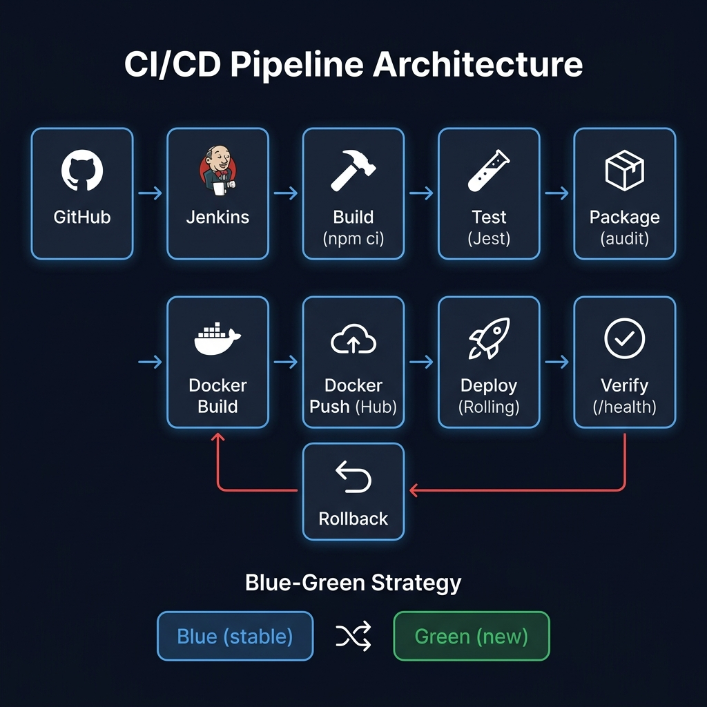

Week Report — Pipeline as Code, Docker & Automated Deployment
This report documents the implementation of an Advanced CI/CD Pipeline as part of the DevOps internship at Davine Technologies. The goal was to move from manual, error-prone deployments to a fully automated, reproducible delivery workflow using Jenkins, Docker, and GitHub.
The application is a Node.js/Express web server exposing REST API endpoints
(/health, /api/version, /api/message) and a
frontend dashboard. It is containerized via a multi-stage Dockerfile that
runs tests during the build step to catch failures early.

The diagram above shows the complete pipeline flow. The red path represents the automatic rollback that triggers when the Verify stage detects a failed health check — Jenkins restarts the container with the previous stable Docker image.
The Jenkinsfile defines the pipeline as code using Jenkins Declarative syntax.
All configuration lives in the repository, making the pipeline version-controlled and
reproducible.
| Stage | Tool / Command | Purpose |
|---|---|---|
| Checkout | checkout scm | Pulls latest source from GitHub, captures git commit SHA and branch name |
| Build | npm ci | Installs exact dependency versions from package-lock.json for reproducibility |
| Test | npm test (Jest) | Runs unit tests + generates coverage report; publishes JUnit XML & HTML report in Jenkins |
| Package | npm audit | Scans dependencies for known security vulnerabilities at HIGH level |
| Docker Build | docker build | Multi-stage build: runs tests inside Docker then produces a minimal production image |
| Docker Push | docker push | Pushes versioned image (:1.<BUILD_NUMBER>) and :latest to Docker Hub |
| Deploy | docker run | Rolling deployment: tags old image as previous-stable, stops old container, starts new one |
| Verify | curl /health | HTTP health check with 6 retries; fails pipeline (triggering rollback) if app is not healthy |
environment {
APP_NAME = 'devops-webapp'
APP_VERSION = "1.${BUILD_NUMBER}"
DOCKER_HUB_CRED = credentials('docker-hub-credentials')
IMAGE_NAME = "${DOCKER_USER}/${APP_NAME}"
IMAGE_TAG = "${APP_VERSION}"
CONTAINER_PORT = '3000'
HOST_PORT = '8080'
}
stage('Verify') {
steps {
script {
def maxRetries = 6
def healthy = false
for (int i = 0; i < maxRetries; i++) {
sleep(time: 5, unit: 'SECONDS')
def code = sh(script: "curl -s -o /dev/null -w '%{http_code}' ${HEALTH_URL}",
returnStdout: true).trim()
if (code == '200') { healthy = true; break }
}
if (!healthy) error('Health check failed — rollback triggered!')
}
}
}
In a rolling deployment the application is updated instance by instance, so the service remains available throughout. In this project:
Blue-Green uses two identical environments — Blue (current production) and Green (new version). Traffic is switched atomically once Green is verified healthy. This approach provides zero downtime and an instant rollback path.
| Aspect | Blue-Green | Rolling |
|---|---|---|
| Downtime | Zero | Near-zero |
| Resource cost | 2× resources needed | Same resource pool |
| Rollback speed | Instant (traffic switch) | Seconds (restart old image) |
| Risk | Lower — parallel testing | Slightly higher |
| Complexity | Higher setup | Lower setup |
Before every deployment, the current running image is tagged as
previous-stable. If the Verify stage fails (health check returns non-200
for 30 seconds), Jenkins' post { failure {} } block automatically:
previous-stable on the same port.Tests are written with Jest and Supertest, covering all API endpoints:
GET /health — returns 200 with status: "healthy"GET /api/version — returns app name, version, environmentGET /api/message — returns greeting message with timestampCoverage reports are published as HTML artifacts in Jenkins via the HTML Publisher plugin, giving visibility on which lines are exercised by the test suite.
The Dockerfile uses a three-stage multi-stage build:
| Stage | Base | Purpose |
|---|---|---|
| deps | node:20-alpine | Install production dependencies only (cached layer) |
| builder | node:20-alpine | Install all deps, run Jest tests — fails build if tests fail |
| production | node:20-alpine | Copy only prod node_modules + src; run as non-root user |
The final image is tagged as yourdockerhubuser/devops-webapp:1.<BUILD>
and pushed to Docker Hub. The image includes a HEALTHCHECK instruction so
Docker itself can report container health.
| Variable | Source | Purpose |
|---|---|---|
| APP_VERSION | Jenkins BUILD_NUMBER | Semantic version injected at runtime |
| NODE_ENV | Pipeline stage | production / test depending on stage |
| DOCKER_HUB_CRED | Jenkins Credentials store | Docker Hub username + password (never hardcoded) |
| PORT | Docker run / compose | Application listening port (default 3000) |
HEALTHCHECK and Jenkins' curl loop verify the deployment is truly healthy, not just started.This week's task demonstrated how a complete CI/CD pipeline automates the entire software delivery lifecycle — from code commit to production deployment — while building in safety nets like automated testing, health verification, and one-click rollback.
The Jenkinsfile, Docker multi-stage build, and deployment scripts produced in this project form a production-ready template that can be adapted for any Node.js application. The Blue-Green and Rolling strategies studied and implemented here are the same patterns used at scale by teams at Netflix, Amazon, and Google.